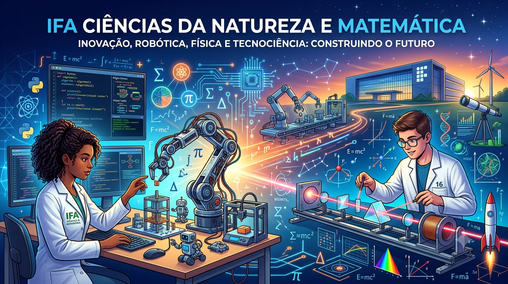

O conteúdo do seu site integrador entrará aqui abaixo do cabeçalho.
O conteúdo do seu site integrador entrará aqui abaixo do cabeçalho.

Unindo a física clássica à automação industrial e programação para desvendar os segredos da luz.
O Disco de Newton prova que a luz branca é a soma de todas as cores do arco-íris. Na nossa aula, o desafio foi automatizar esse processo. Os alunos programaram motores para alcançar a velocidade exata de rotação necessária para enganar o olho humano através da persistência retiniana, transformando o arco-íris em branco.
"Ver a teoria de Newton se materializar através de linhas de código e motores mostra que a ciência e a tecnologia andam de mãos dadas."
| Física Óptica | Programação | Robótica Aplicada |
|---|---|---|
| Decomposição da luz e espectro visível. | Controle de loops, variáveis e PWM. | Montagem de circuitos e acionamento de motores. |